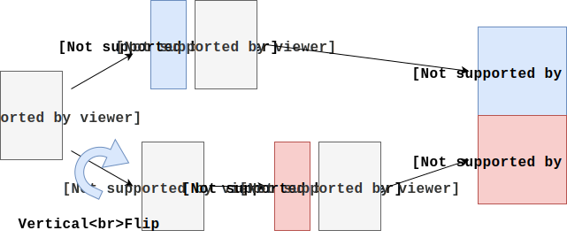
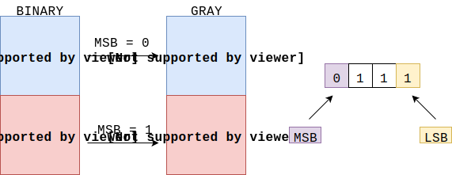
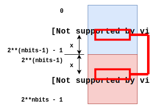
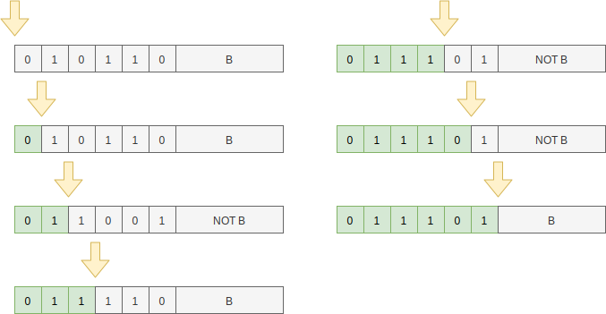
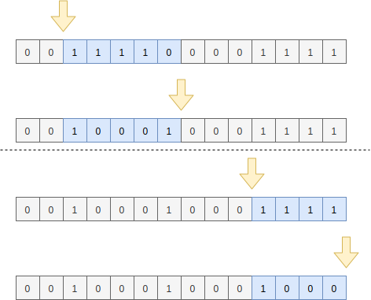
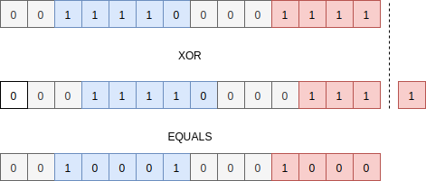

Binary to Gray code conversion algorithm is deceptively simple:
/* This function converts an unsigned binary
* number to reflected binary Gray code.
*
* The operator >> is shift right. The operator ^ is exclusive or.
*
* Source: https://en.wikipedia.org/wiki/Gray_code
*/
unsigned int binaryToGray(unsigned int num) {
return num ^ (num >> 1);
}in this article I will explain how it works.
Gray code
Gray code is a binary code in which two consecutive values differ only by a single bit. Three-bit Gray code, along its binary counterpart, looks like this:
| BINARY| GRAY|
| 000| 000|
| 001| 001|
| 010| 011|
| 011| 010|
| 100| 110|
| 101| 111|
| 110| 101|
| 111| 100|N+1-bit Gray code can be easily constructed
from N-bit Gray code using the following process:

This variant of Gray code is often called reflected binary Gray code. The “Vertical Flip” step is nothing else than creating a mirror image of the code in vertical direction.
The above process, with the fact that 1-bit Gray code
consists just of values 0 and 1,
allows us to write a recursive algorithm for converting
between corresponding binary and Gray code values.
Recursive algorithm
We will define a function G(nbits, n) that returns
nth nbits-bit Gray code value.
n must be in range 0 .. 2**nbits - 1
(where ** means power).
For nbits equal to 1 this is trivial:
func G(nbits, n) {
if (nbits <= 1) return n;
???
}we return 0 when n is zero, and one when
n is one.
Next we need to translate the process from the first picture into code:
var msbBit = msb(nbits, n)
if (msbBit == 0) {
return msbBit | G(nbits-1, n);
}
else {
// clear MSB bit
var nWithoutMsb = n & ~msbBit;
var nonReflectedPos = pow(2, nbits-1)-1 - nWithoutMsb;
return msbBit | G(nbits-1, nonReflectedPos)
}Where msb is a simple function that returns
the most significant bit (MSB for short) of
an nbits-bit number n:
func msb(nbits, n) {
return n & (1 << (nbits-1));
}Similarly we will use LSB term to refer to the least significant bit of a number.
There are two key observations that we must make to understand how the algorithm works. First observation is that binary values share the same value of MSB bit with the corresponding Gray code values.  This is the result of the construction process, that adds leading zeros to the upper half (blue) of the Gray code, and leading ones to the lower half (red) of the code.
When MSB = 0 we are in the upper half (blue) of the nbits-bit
Gray code, which was constructed from the nbits-1-bit Gray
code by adding extra 0 as a prefix to its values.
In this case we just call recursively G(nbits-1, n)
(n is in this case < 2**nbits/2 = 2**(nbits-1)),
and add a 0 as a prefix to the result to
finish the conversion to nbits-bit code.
When MSB = 1 we are in the lower half (red) of the code, that
was constructed by vertically flipping nbits-1-bit Gray
code and adding 1 as a prefix to its values.

The second key observation here, is the relationship between
reflected nbits-1-bit Gray code and its non-reflected counterpart.
nbits-1-bit Gray value that is located
at xth position in the red (reflected)
area is exactly the same as
2**(nbits-1)-1 - xth value located in the blue area.
To convert n into nbits-1 Gray code, first
we remove 1 MSB bit from it, converting
it basically into our x
(zero-based offset from the beginning of the red area; see the picture above).
Then we compute position of xs counterpart in
the non-reflected (blue) area of the code, by using expression:
var nonReflectedPos = pow(2, nbits-1)-1 - nWithoutMsb;Then we call G(nbits-1, nonReflectedPos) to
compute nbits-1-bit Gray code value
and finally we restore 1 bit prefix to it.
The above algorithm expressed in Java:
private static int msb(int nbits, int n) {
return n & (1 << (nbits-1));
}
private static int G(int nbits, int n) {
if (nbits <= 1) return n;
int msbBit = msb(nbits, n);
if (msbBit == 0) {
// We can skip 'msbBit |' part because
// '(0 | x) == x'
return msbBit | G(nbits-1, n);
}
else {
int nWithoutMsb = n & ~msbBit;
int nonReflectedPos =
(int)Math.pow(2, nbits-1)-1 - nWithoutMsb;
return msbBit | G(nbits-1, nonReflectedPos);
}
}Using Strings to represent binary values
To further improve our algorithm we need to change
our representation of binary values from 32-bit integers
to strings. For example a string "110" will represent
a 3-bit binary value. We will also use empty string
"" to represent a sole zero-bit binary value
(after all 2**0 = 1, so there is one such value).
To proceed further, we need two simple facts.
Fact 1: Numbers in form 2**k - 1 are represented in
binary by sequence of k ones.
For example 2**3-1 = 7 is 111 in binary.
Fact 2: Substracting k-bit value p from 1...1 (k ones)
is equal to negating p:
11111111
- 01010011
----------
10101100These both facts will allow us to rewrite
the expression for computing nonReflectedPos value from:
// n is a nbits-bit number
// nWithoutMsb is a (nbits-1)-bit number
// 2**(nbits-1)-1 = 1...1 (nbits-1 ones in binary)
int nonReflectedPos =
(int)Math.pow(2, nbits-1)-1 - nWithoutMsb;to
// Simple binary negation
String nonReflectedPos = not(nWithoutMsb);Our previous algorithm changed to use strings and expressed in JavaScript:
function not(bits) {
return bits.split('').
map(function(c) { return c == '0' ? '1' : '0'; }).
join('')
}
function G(b) {
if (b === '') return ''; // zero bit code
var firstBit = b.charAt(0);
if (firstBit == '0') {
return '0' + G(b.substring(1));
}
else {
return '1' + G(not(b.substring(1)));
}
}The single-line algorithm
If we now look at the code of our algorithm, we
may see that all it does is to negate the unseen part of the
input every time we encounter 1 bit:

Let us consider how our algorithm will transform
groups of ones followed by a single zero bit (11...110):

As we can see group of 11...110 bits is transformed into 10...01,
but what is more important: bits that are after this group remain unchanged.
Similarly groups of ones without trailing zero (1...1),
which may only occur at the end of the input are transformed into 10...0.
Now is the time for another key observation: the above transformations can be performed by XORing value with itself shifted right by one:

This works because after the shift every group of ones must be preceded by at least a single zero bit. Additionally every group of ones (except when the ones occur at the end of the input) must be followed by at least one zero bit. In other words different groups of ones are not interfering with each other while XORing.
Also notice that we must use right-shift operation that always
shifts-in a zero bit.
In Java this means using >>> (unsigned right shift)
instead of >> operator.
int binaryToGray(int num) {
return num ^ (num >>> 1);
}Source code (GitHub Gist): grayBin.js